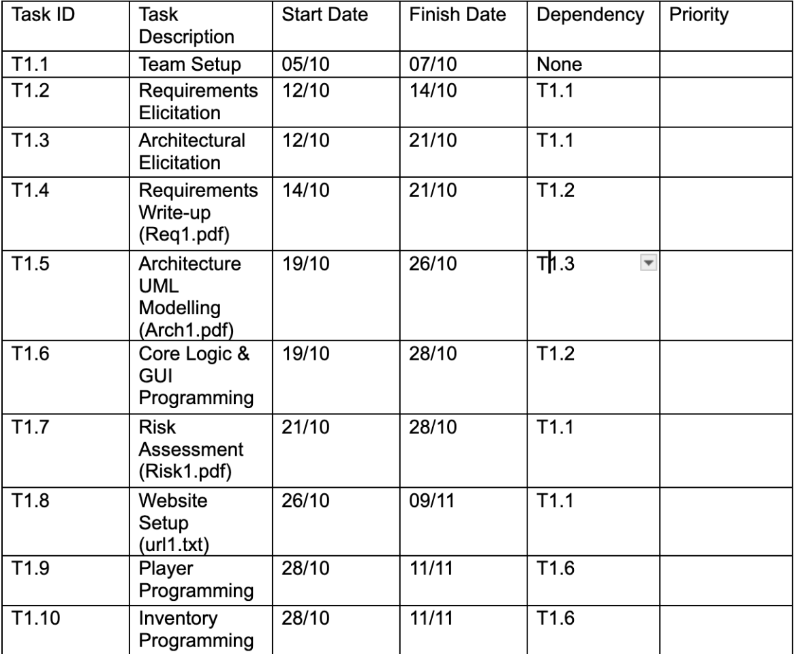

Earlier planning export
Page 4 records planned dates and dependencies for 14 tasks. The table has no priority column.
Open earlier plan (PDF)Assessment 1
Weekly planning records and the architecture documents used to develop Goose Patrol.
Weekly record for October–November 2026.

The compared exports have unverified capture dates.
Page 4 records planned dates and dependencies for 14 tasks. The table has no priority column.
Open earlier plan (PDF)Pages 3–4 add priorities while retaining the same planned dates. Risk assessment and website setup are medium priority. The other 12 tasks are high priority.
Open Plan1.pdf